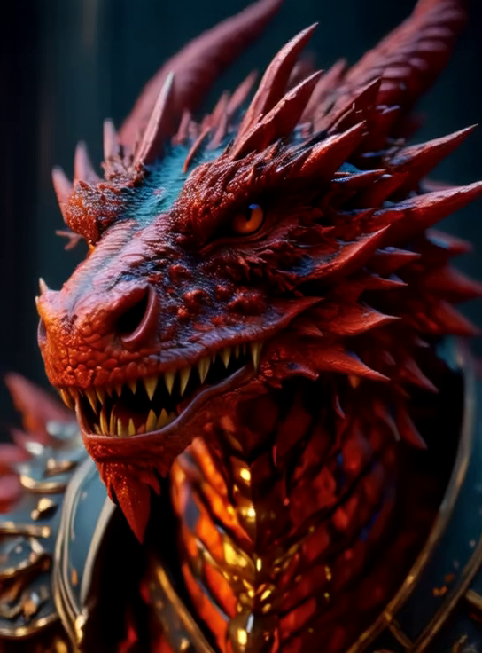
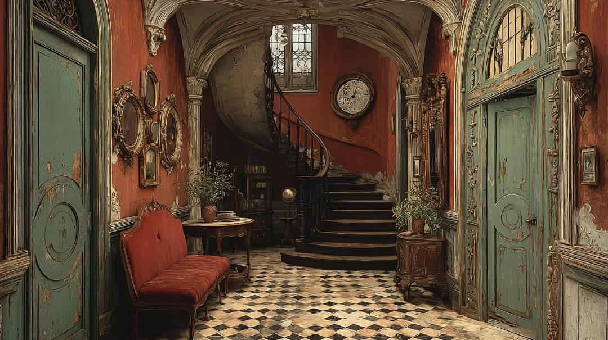
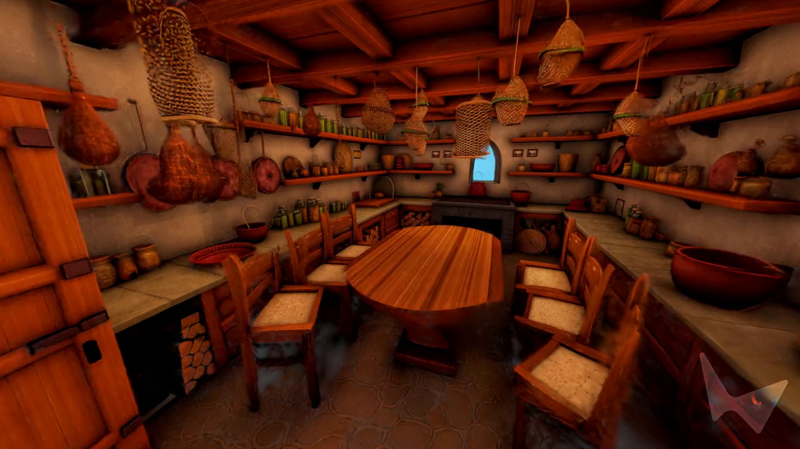
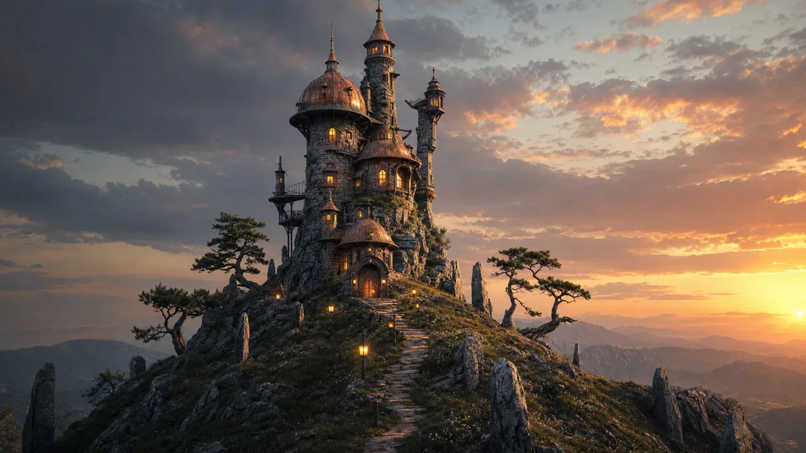
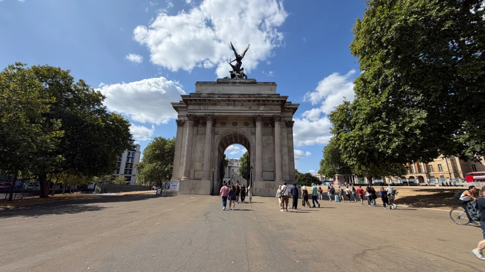

UniWorld-View: Large-Baseline View Synthesis via Video Diffusion Models
Peking University · Rabbitpre AI
Overview
Turn a monocular input into an immersive, controllable world.
UniWorld-View generates photorealistic novel views from a single image or video, even when the target camera moves far beyond the original observation.
It couples occlusion-aware 3D point-cloud guidance with video diffusion to preserve scene appearance, geometry, and temporal consistency across wide-baseline camera trajectories.
Qualitative Results
UniWorld-View produces high-fidelity novel views across three settings: 3D NVS from a single image, 4D NVS from a source video, and 4D scene generation from a source video.
3D Novel View Synthesis
Input: a single image → Output: a generated video of novel views
Single-stage generation11 cases
A single generation pass from the input image.







Two-stage generation7 cases
Forward-progressing trajectories in two stages. The final frame of the first stage conditions the second stage. One external input image; each video is presented in 10 seconds.





4D Novel View Synthesis
Input: a source video → Output: a generated video from a new camera trajectory
4D Scene Generation
Input: a source video → Output: a reconstructed 4D scene
BibTeX
@misc{zhou2026uniworldviewlargebaselineviewsynthesis,
title={UniWorld-View: Large-Baseline View Synthesis via Video Diffusion Models},
author={Haiyang Zhou and Wangbo Yu and Chaoran Feng and Xunyu Zhou and Yonghong Tian and Li Yuan},
year={2026},
eprint={2608.04701},
archivePrefix={arXiv},
primaryClass={cs.CV},
url={https://arxiv.org/abs/2608.04701},
}